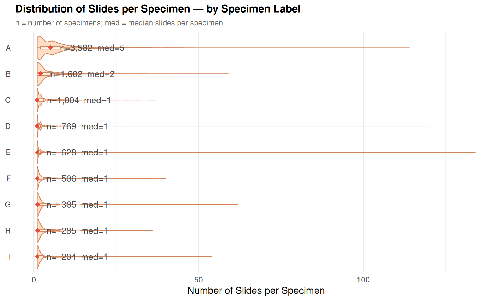

OMOP Whole Slide Imaging
Summary:
The OMOP _whole_slide_imaging table contains records of digitized pathology slides, including structured metadata, access paths to whole slide image files, and links to structured EHR data. This table serves as a proof of concept demonstrating how whole slide imaging files can be integrated and analyzed within the OMOP framework alongside clinical data.
Note
The WSI data pull is limited to thoracic cancer patients only within the overall patient pool.
Each record represents a single whole slide image with associated metadata including:
- Patient identifier (person_id)
- Accession number linking to clinical specimens
- URIs to both JSON metadata and TIFF image files
- Specimen source and type classifications
- Procedure timing information
- Links to clinical notes
Currently, the table contains manually scanned slides that have been deidentified and converted into TIFF and JSON file formats. Only slides with order_proc_ids that can be linked to Epic Clarity are included to ensure data quality and patient eligibility. The May 2026 release includes approximately 35,000 whole slide images in the OMOP table.
Please note that the whole slide imaging dataset is in an early stage of development, and will continue to evolve as we work towards integrating more comprehensive imaging datasets in the future releases.
📊 Dataset Overview
- Total WSI Files: 46,897
- Unique Patients: 2,379
- Unique Accessions: 3,772
📁 File Availability
- Metadata of the WSI Files in JSON Format: 46,897 (100%)
- Metadata of the WSI Files in TIFF Format: 46,897 (100%)
Temporal Trends
The WSI files in this dataset span procedures from 2016 to 2025.
Note
Patient counts are computed as distinct patients per time period. A patient with procedures in multiple years appears in each, so yearly totals may exceed the overall unique patient count.
Specimen / Block / Slide Distribution
In pathology, each record in the WSI table corresponds to a single digitized glass slide. Understanding the hierarchy above each slide is important for interpreting the data:
- Accession: represents a single clinical event (a patient visit or referral that triggers laboratory processing). Each accession contains one or more specimens.
- Specimen: a distinct tissue sample taken from a specific anatomical site during that clinical event.
- Block: a paraffin-embedded tissue section cut from a specimen, preserving the tissue for long-term storage and repeated sectioning.
- Slide: a thin tissue section cut from a block and stained (typically H&E) for diagnostic assessment. Each slide is digitized as a whole slide image (WSI).
The chart and table below show how the data fans out at each level of the hierarchy, aggregated per accession.
Summary by Hierarchy Level

Specimen Source Distribution
Each WSI record includes a specimen_source field describing the anatomical origin of the tissue (e.g., “lung, right upper lobe”, “breast, left, 2 o’clock”). The raw field contains over 200 granular categories, making direct visualization impractical. To summarize, records are grouped by extracting the first word of the specimen source and converting it to title case — for example, all entries starting with “lung” are grouped as Lung, all starting with “breast” as Breast, etc.
Sources that don’t match a recognized keyword are collected under Other. The Distribution tab shows the top groups, Subgroups provides an interactive sunburst drill-down into the original values within each group, and the Summary Table lists all groups and subgroups with counts.
Thoracic Tumor Board Patients
Thoracic tumor board patients are identified by cross-referencing visit records containing “tumor board” with patients who have a thoracic cancer diagnosis (lung, bronchus, or thymus) in the Stanford Cancer Registry (NeuralFrame). This section examines the overlap between these patients and the whole slide imaging dataset.
Of the 2,972 thoracic tumor board patients, 961 (32.3%) have associated WSI files.
Source Codes:
The source codes for this page can be found here, and the SQL queries that support the metrics can be found here.